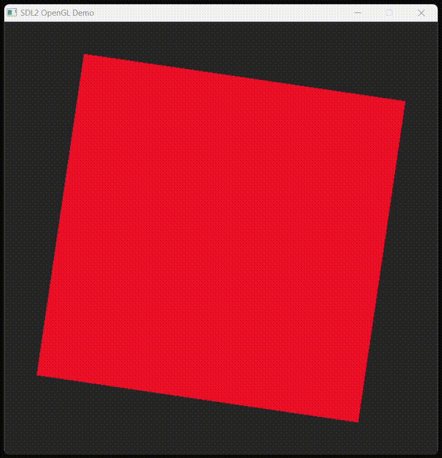

CJIT for graphical applications
Be welcome to the exciting world of graphical C applications using SDL (Simple DirectMedia Layer). SDL, originally developed by Sam Lantinga in 1998, is a powerful, cross-platform library designed to provide low-level access to audio, keyboard, mouse, and graphics hardware via OpenGL and Direct3D.
Warn
This part of the tutorial may be incomplete for Apple/OSX, please help testing and refining it!
Download the cjit-demo package
From now on this tutorial will guide you to launch more complex applications, showing how to use libraries that are installed on your system and shipped along with the source code.
To setup the demo environment you can simply run the command below:
iex ((New-Object System.Net.WebClient).DownloadString('https://dyne.org/cjit/demo'))
curl -sL https://dyne.org/cjit/demo.sh | bash
curl -sL https://dyne.org/cjit/demo.sh | bash
The Beauty of Random
Execute sdl2_noise.c passing the source file as argument to CJIT. Since we are also using a library, there may be the need for some extra parameters:
.\cjit.exe sdl2_noise.c SDL2.dll
./cjit ./sdl2_noise.c -lSDL2
./cjit ./sdl2_noise.c /usr/lib/x86_64-linux-gnu/libSDL2.so

Info
This preview looks blurred because video compression cannot deal well with randomness.
Have a look inside sdl2_noise.c, and see the first line of code:
The "hashbang"
#!/usr/bin/env cjit
The source file can be launched as a script, when the CJIT interpreter is found in PATH.
Warning
The hashbang works only on Apple/OSX and GNU/Linux, where scripts can be made executable with chmod +x
The pragma lib
Also see this pre-processor directive:
#pragma comment(lib, "SDL2")
This line tells CJIT to link the SDL2 shared library. It is the equivaled of SDL2.dll on the commandline, with the only difference that it can be specified inside the source code.
Info
On Windows the DLL files need to be in the same directory of execution, or installed system-wide.
Three Dimensions
To draw accelerated graphics and 3D objects we'll use OpenGL libraries, which need to be installed on the system.
Install the Windows SDK which is distributed gratis by Microsoft.
Not sure (help testing this please!)
sudo apt-get install libopengl-dev
Then run CJIT passing examples/opengl.c as argument.

For more details on using OpenGL and SDL2 in C with shaders, read the multi-platform-modern-opengl-demo-with-sdl2 tutorial on which our example code is based.
Nuklear widgets
Nuklear is a minimal, immediate-mode graphical user interface toolkit written in ANSI C and licensed under public domain. It is designed to be lightweight and highly customizable, and provides a wide range of components, including buttons, sliders, text input fields, and more, all of which can be integrated seamlessly with CJIT.
This time the code of our example is distributed across multiple files, this is a quick overview of what is found inside the example folder:
.
├── nuklear
│  ├── calculator.c
│  ├── canvas.c
│  ├── node_editor.c
│  ├── overview.c
│  └── style.c
├── nuklear.c
└── nuklear.h
The main code of our example is examples/nuklear.c and by default it will just start all modules.
Fire it up as usual with ./cjit.exe examples/nuklear.c or equivalent commands on GNU/Linux and Apple/OSX.
And 💥Boom! enjoy Nuklear!

That's all for now!
If you like this manual, give CJIt a star, let us know what you'd like to see next and consider making a donation to Dyne.org. Thanks!